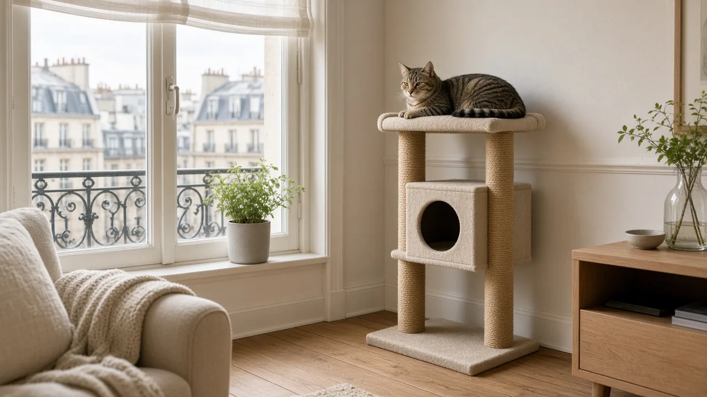
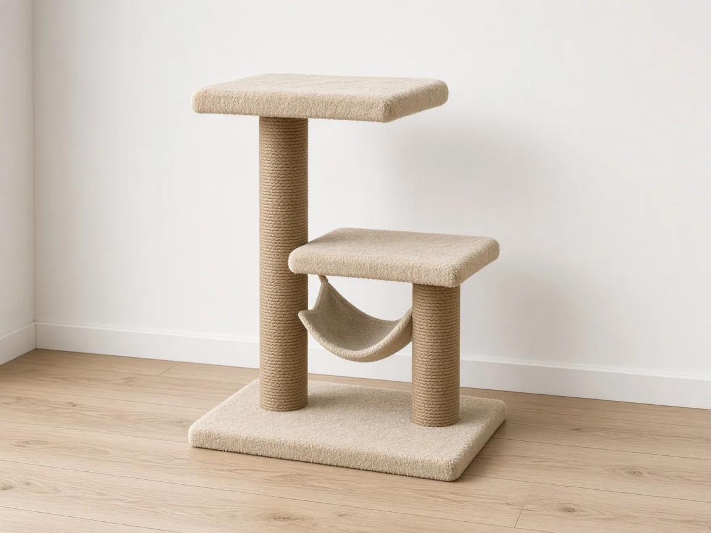
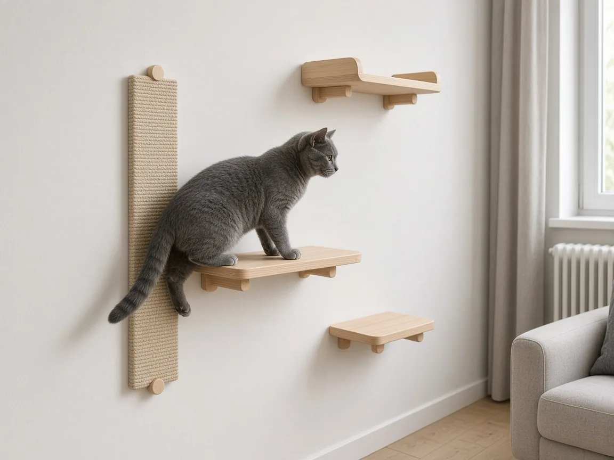
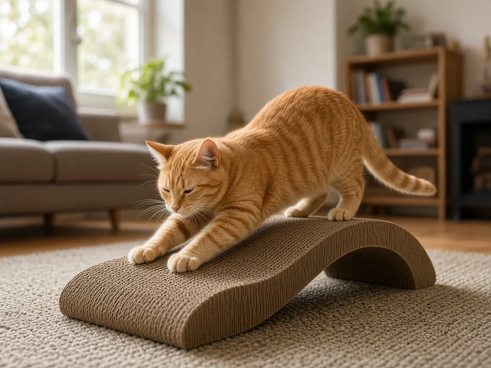

Arbre à chat pour petit appartement : lequel choisir ?

En appartement, ton chat n’a pas de jardin ni d’arbres à escalader. Il a pourtant besoin de deux choses chaque jour : griffer pour entretenir ses griffes et marquer son territoire, et prendre de la hauteur pour observer tranquillement. Sans solution prévue pour ça, il se rabat sur le canapé et le haut des meubles. Bonne nouvelle : pas besoin d’un arbre géant de deux mètres. Voici les trois options qui marchent le mieux quand la place manque.
Les 4 points à vérifier avant d’acheter
- La stabilité : un arbre qui bouge quand le chat saute dessus lui fait peur, et il ne l’utilisera plus. Regarde la largeur du socle et le poids total, et préfère un modèle qui peut se fixer au mur.
- L’encombrement au sol : mesure le coin prévu. Un socle d’environ 40 × 40 cm suffit souvent pour un modèle compact.
- Le revêtement des poteaux : la corde de sisal est la plus résistante aux griffes. La moquette seule s’abîme vite.
- Le gabarit de ton chat : un grand chat a besoin de plateformes larges et de poteaux épais. Vérifie le poids maximal indiqué par le fabricant.
1. L’arbre à chat compact

Le tout-en-un pour un coin de salon
Un modèle de 80 cm à 1,20 m réunit griffoir, perchoir et parfois une niche ou un hamac sur une petite surface. C’est la solution la plus simple : tu le poses près d’une fenêtre et ton chat a un poste d’observation à lui. Choisis des poteaux en sisal assez épais et une plateforme du haut bien rembourrée, c’est souvent là qu’il passera ses siestes.
Voir sur Amazon – arbres à chat compacts2. Les étagères murales avec griffoir

Pour gagner de la hauteur sans prendre de place au sol
Des marches et des plateformes fixées au mur créent un parcours en hauteur, et un panneau en sisal vertical sert de griffoir. Rien au sol, et ton chat profite de toute la hauteur sous plafond. Il faut percer et fixer solidement chaque élément dans un mur porteur ou avec des chevilles adaptées. En location, demande d’abord l’accord du propriétaire, ou opte plutôt pour l’arbre compact.
Voir sur Amazon – étagères murales3. Le griffoir en carton

Le complément pas cher à mettre partout
Un griffoir en carton ondulé coûte peu et beaucoup de chats l’adorent pour griffer à l’horizontale. En forme de vague, il sert aussi de petit lit. Ce n’est pas une solution de hauteur, mais c’est parfait pour compléter un arbre ou des étagères : places-en un près du canapé ou à l’entrée, là où ton chat a l’habitude de griffer. Il s’use, donc compte le remplacer de temps en temps.
Voir sur Amazon – griffoirs en cartonQuelle solution pour quel logement ?
| Situation | Solution conseillée | Point d’attention |
|---|---|---|
| Studio ou petit salon | Arbre à chat compact | Stabilité du socle |
| Propriétaire, murs libres | Étagères murales avec griffoir | Fixation solide |
| Locataire | Arbre compact et griffoir en carton | Aucun perçage nécessaire |
| Chat qui griffe le canapé | Griffoir en carton près du canapé | Le placer au bon endroit |
Bien l’installer pour que ton chat l’adopte
- Place l’arbre près d’une fenêtre : la vue sur l’extérieur est souvent ce qui le rend irrésistible.
- Mets le griffoir là où ton chat griffe déjà, plutôt que dans une pièce où il ne va jamais.
- Frotte un peu d’herbe à chat ou pose un jouet sur la plateforme les premiers jours.
- Félicite-le quand il l’utilise, et ne le force jamais à monter.
- Complète avec un jouet interactif pour qu’il se dépense aussi quand tu n’es pas là.
FAQ
Mon chat a déjà un griffoir, a-t-il besoin d’un arbre à chat ?
Pas forcément, mais un chat d’intérieur aime avoir un point en hauteur pour observer et se reposer. Si ton chat grimpe sur les meubles ou le frigo, un arbre ou des étagères lui offrent un endroit à lui.
Quelle hauteur choisir en petit appartement ?
Entre 80 cm et 1,20 m, un arbre reste discret et suffit à la plupart des chats. Plus haut, il doit absolument être fixé au mur pour rester stable.
Comment empêcher mon chat de griffer le canapé ?
Propose-lui un griffoir juste à côté du canapé, dans un matériau qu’il aime, et rends le canapé moins attirant (plaid, housse). Ne le gronde pas : griffer est un besoin naturel, il faut juste lui offrir un meilleur endroit.
Où le placer dans un studio ?
Près d’une fenêtre et loin de la litière et de la gamelle. Un coin calme mais pas isolé, d’où il peut te voir.
Notre avis
Dans la plupart des petits appartements, un arbre à chat compact avec poteaux en sisal, complété par un griffoir en carton près du canapé, couvre l’essentiel pour un budget raisonnable. Si tu es propriétaire et que les murs sont libres, les étagères murales font gagner de la place au sol et plaisent beaucoup aux chats grimpeurs. Pour équiper le reste de l’appartement, vois notre Top 5 des équipements 2026.
Pas encore prêt à acheter ? Commencez par notre audit gratuit en 1 jour (PDF).
Liens affiliés Amazon — nous pouvons toucher une commission sans surcoût pour vous.